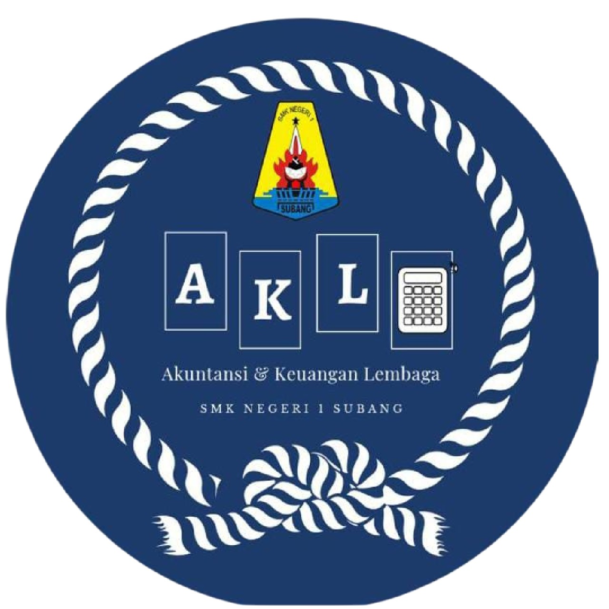

Akuntasi
Pengantar
Akuntansi adalah ilmu proses mencatat dan merangkum informasi finansial yang berkaitan dengan semua transaksi dan kejadian di perusahaan atau organisasi, serta menyajikan informasi tersebut untuk dipahami oleh penggunanya, baik pihak internal maupun pihak eksternal.
Kompetensi Keahlian Akuntansi dan Keuangan Lembaga di SMK Negeri 1 Subang menyiapkan lulusan berkualitas dan kompetitif dalam bidang pembukuan/administrasi keuangan dan akuntansi dengan berbagai keterampilan dan kompetensi dalam bidang akuntansi dan keuangan di berbagai perusahaan/instansi baik perusahaan jasa, dagang, manufaktur maupun lembaga/instansi pemerintah.
Kompetensi Dasar
- Etika Profesi
- Aplikasi Pengolah Angka / Spreadsheet
- Akuntansi Dasar
- Perbankan Dasar
- Praktikum Akuntansi Perusahaan Jasa, Dagang, dan Manufaktur
- Praktikum Akuntansi Lembaga / Instansi Pemerintah
- Akuntansi Keuangan
- Komputer Akuntansi
- Administrasi Pajak
- Produk Kreatif dan Kewirausahaan
Tujuan Pembelajaran
Tujuan Kompetensi Keahlian Akuntansi dan Keuangan Lembaga secara umum mengacu pada isi Undang-Undang Sistem Pendidikan Nasional (UU SPN) pasal 3 mengenai Tujuan
Pendidikan Nasional dan penjelasan pasal 15 yang menyebutkan bahwa pendidikan kejuruan merupakan pendidikan menengah yang mempersiapkan peserta didik terutama
untuk bekerja dalam bidang tertentu.
Secara khusus tujuan Kompetensi Keahlian Akuntansi dan Keuangan Lembaga adalah membekali peserta didik dengan keterampilan,
pengetahuan dan sikap agar kompeten dalam:
Tenaga Pengajar
- Siti Maryam, S.Pd.
- Pepen Apendi, S.Pd., M.Pd.I
- Ismiyanti, S.Pd
- Dani Nur Muhamad, S.E.
- Rikawati, S.Mn.
- Tina Mulayyinatun Nisa, S.Pd.
- Iis Ismawati, S.Pd.
- Putri Maulida Hutami, S.Pd.